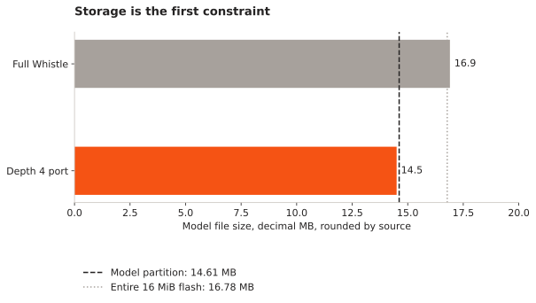
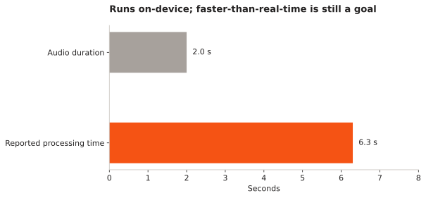

English-only speech on ESP32
I am working towards local English speech recognition on an ESP32. The research is about fitting a useful model into the device and measuring what compression costs in recognition quality and response time.
- Reference target
- ESP32-S3 N16R8
- Starting model
- Cactus Whistle
- My board results
- Not yet recorded
How far can an English-focused speech model be reduced before accuracy or device latency becomes unacceptable?
Start with the right model and the right memory budget
The speech model in the Cactus family is Whistle . Needle and Needle 2 are tool-calling models. I am treating the speech checkpoint and its runtime as separate choices, rather than using the release name as a hardware specification.
Whistle uses a log-mel audio front end, an encoder and a cross-attention decoder. The model card describes a 16.9 MB multilingual file and a decoder that can run at supported reduced depths. That makes depth reduction a concrete starting baseline for this experiment. Model architecture .
Flash stores firmware and model data. SRAM and PSRAM hold working state such as activations, audio buffers and caches. A model file fitting in flash does not establish that inference fits in RAM or finishes quickly enough. The S3 has 512 KiB of on-chip SRAM; the N16R8 reference configuration adds 16 MiB flash and 8 MiB PSRAM. Espressif specifications .
What is already feasible
An independent Whistle ESP32-S3 port reports local transcription on N16R8 hardware using a custom C99 engine. Its depth-4 model is about 14.5 MB. The same project reports 6.3 seconds of processing for one two-second English command at 240 MHz. This supports feasibility on that configuration; it does not establish real-time performance or my own deployment.


English-only is an experiment, not a removable language pack
My initial idea was to remove capacity that English transcription does not need. The testable version starts with English decoding and supported decoder-depth changes, then examines structured pruning or distillation with recovery training. Restricting output tokens alone is not equivalent to removing language-specific weights: the encoder and decoder share their representations.
I want to change one factor at a time. Otherwise, a smaller model may appear successful because the test phrases are easier or the decoder has been biased towards a few expected commands. Distil-Whisper is a reference for teacher–student compression, not a checkpoint I claim will fit on this board.
Fix the checkpoint, decoder depth and English test split. Save the original transcripts and model size.
What I will measure
| Measure | Protocol |
|---|---|
| Recognition quality | Word error rate on fixed held-out English audio, reported separately for clean and noisy speech. |
| Device cost | Exact model bytes, peak SRAM/PSRAM, firmware size and out-of-memory failures. |
| Responsiveness | End-of-speech latency and real-time factor across short commands and longer utterances. |
| Failure behaviour | Silence, non-speech audio, accents, unfamiliar words and sustained recording. |
| Repeatability | Checkpoint hash, board variant, clock, decoder settings and identical test clips. |
The current deliverable is the model-reduction and embedded-port experiment. I have not yet recorded a successful run or a speed improvement on my own board. The next useful result is a reproduced baseline with a complete memory and latency trace. From there, each reduction has to earn its place by preserving recognition quality.
References and project records
- Cactus Whistle model and model card
Speech checkpoint, architecture and supported decoder depth.
- Cactus source repository
The broader inference engine and its documented platforms.
- Cactus Needle / Whistle package
Official package source linked from the Whistle model card.
- Independent Whistle ESP32-S3 implementation
External feasibility evidence and reported timings; no claim of authorship or reproduction.
- ESP32-S3 datasheet
Memory, processor and peripheral constraints.
- Distil-Whisper
A reference for English speech-model distillation.